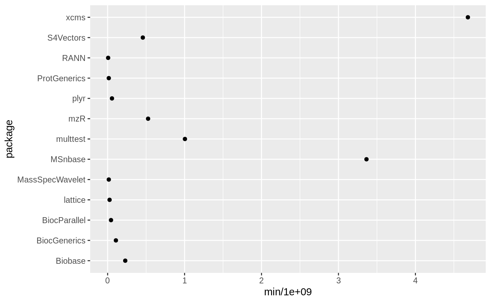
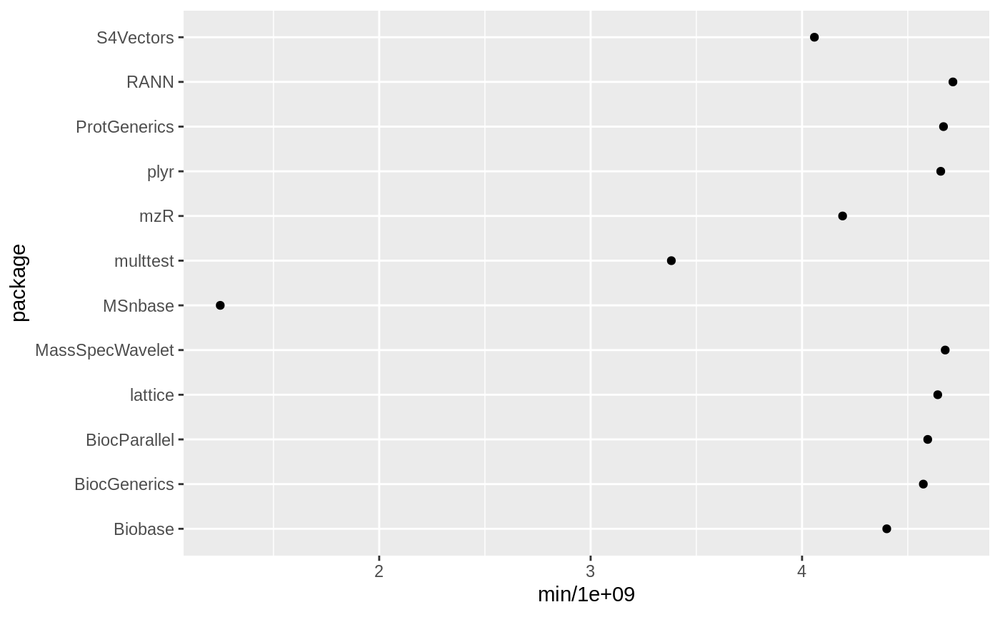

Website: https://rmflight.github.io/importedPackageTimings
The goal of importedPackageTimings is to help R package developers determine if any of the R packages their package depends on (i.e. imports) make loading their own package slow.
To accompmlish this, it uses independent R sessions from the future package to time how long it takes to load each of the packages listed in the Imports and Depends fields of the package in question. Although it will take a long time because it only uses a single core at a time (the only way I could get reliable timings), the times seem to be reliable.
Supported Platforms
Warning: This package has only been tested on Linux, using the future and the multiprocess backend. I think this should work on Mac without any issues. I’m not sure which backend should be used on Windows such that each call to furrr::future_map_dbl is launching a new R sub-process that will be completely clean.
The way to know if the code is working correctly is to look at the consistency of the timings returned from imported_timings for a sufficiently long imported package. They should be very consistent. If the process is not new, then the first timing will be long, and subsequent ones much, much shorter.
Example
For example, lets look at a Bioconductor package I’ve seen take a long time to load, xcms.
# not run
library(furrr)
plan(multiprocess)
library(importedPackageTimings)
xcms_time = imported_timings("xcms")The package provides two types of timings, the time required for the dependency to load (type = pkg), and then the time required for the package to load after the dependency (type = after).
| package | med | min | max | type | which |
|---|---|---|---|---|---|
| xcms | 4777753784 | 4540154629 | 5047299157 | pkg | self |
| xcms | 120612 | 118835 | 153174 | after | self |
| mzR | 695070041 | 654965228 | 726937410 | pkg | import |
| mzR | 4188562694 | 4100112954 | 4393323772 | after | import |
| BiocGenerics | 146176624 | 132330703 | 160247180 | pkg | import |
| BiocGenerics | 4520280675 | 4330646417 | 4579202503 | after | import |
We can use the pkg entries to see which imports actually take a long time to load, possibly contributing to the long load time of our package in question.
library(ggplot2)
ggplot(dplyr::filter(xcms_time, type %in% "pkg"),
aes(x = min / 1e9, y = package)) +
geom_point()
From this plot, we can see that MSnbase looks like it is taking the longest to load outside of xcms itself.
We can use the after entries to see which imports after loading have the smallest time to load our package in question, which also implies they may be the culprit causing long load times.
ggplot(dplyr::filter(xcms_time, type %in% "after", which %in% "import"),
aes(x = min / 1e9, y = package)) +
geom_point()
Code of Conduct
Please note that the importedPackageTimings project is released with a Contributor Code of Conduct. By contributing to this project, you agree to abide by its terms.